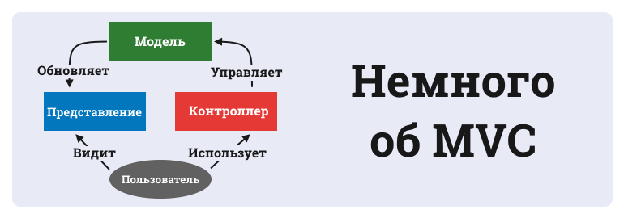

Django
Django Unchained

Фреймворк
- Библиотека -- набор функций
- Фреймворк --
какрас
каркас, задающий, кроме функций, правила организации кода
Фреймворк
«Фреймворк» определяется как множество конкретных и абстрактных классов, а также определений способов их
взаимоотношения. (c) Википедия
О как
Известные фреймворки
- PHP (Yii, Zend, Symfony)
- JS (Node.JS, Angular, Backbone.js)
- HTML/CSS (Bootstrap, Foundation)
- Ruby (Ruby on Rails)
- C# (.NET Framework)
- C++ (Twisted Framework)
- Python (Django, Flask, Tornado)
Три стула
- написание исходного кода с нуля
- использование фреймворков
- установка готовой CMS
MVC (по-русски)
- Модель
- Представление
- Контроллер
MVC (по-человечески)
- Данные и методы работы с ними
- Отображение информации
- Связь между данными и отображением
MVC (для самых маленьких)

MVC в вебе
- БД или ORM
- HTML/CSS
- Python/Java/PHP/C#
ORM
SELECT * FROM users WHERE login='egpro';
ORM
engine.execute (
"SELECT * FROM users WHERE login='egpro';"
)
ORM
users = engine.execute (
"SELECT * FROM users WHERE login='egpro';"
).fetchall()
ORM
def get_users(login):
return engine.execute (
"SELECT * FROM users WHERE login='{login}';".format(login=login)
).fetchall()
ORM
def get_users(login, only_active=False):
query = "SELECT * FROM users WHERE login=?"
if only_active:
query += " AND is_active"
return engine.execute(query, login).fetchall()
ORM
def get_users(login, only_active=False):
users = User.filter(login=login)
if only_active:
users = users.active
return users
Django
- Open-source
- Отличная документация
- Django ORM
- MTV
- Генерируемая админка
- Высокая скорость работы
- PYTHON ONE LOVE <3
Не без минусов
- Монолитный
- Базируется на Django ORM
Не без минусов
- Монолитный
- Базируется на Django ORM
- Мы очень любим Django, поэтому ругать не будем
А теперь потрогаем Django